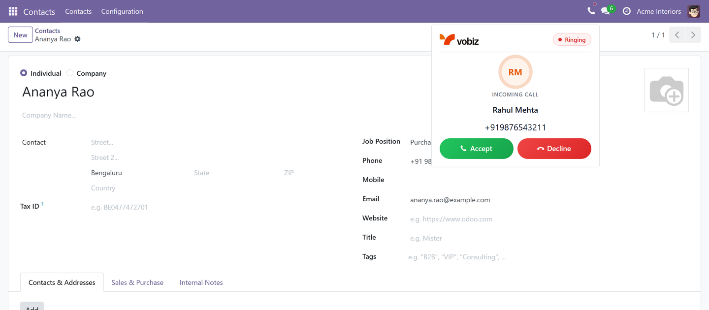
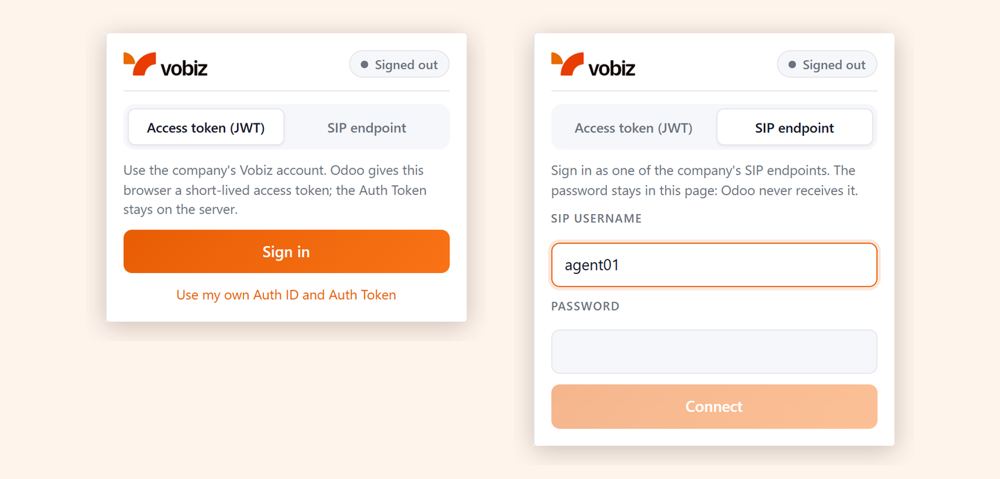
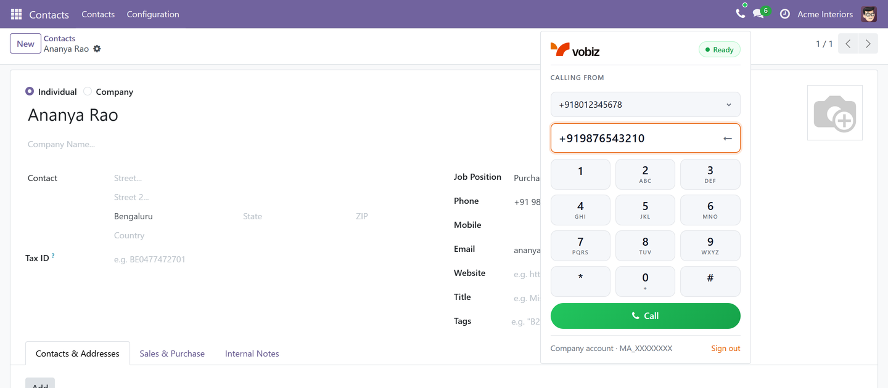
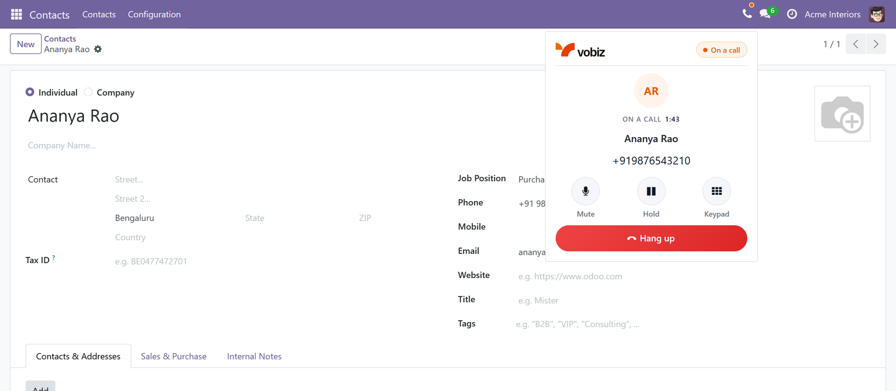
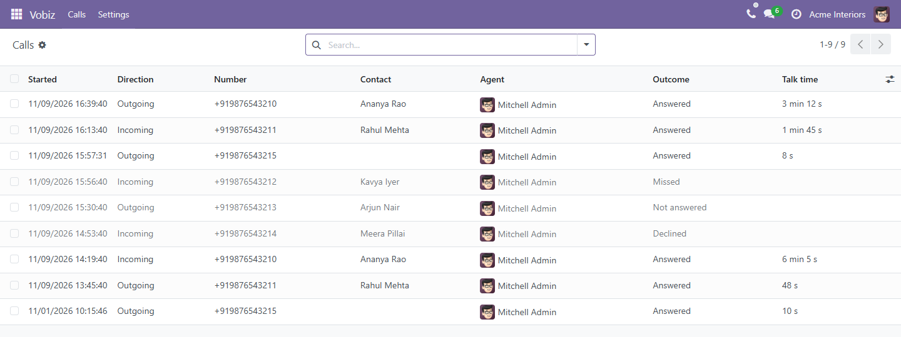
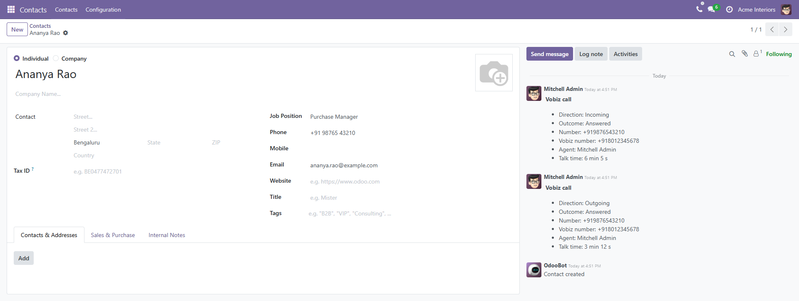
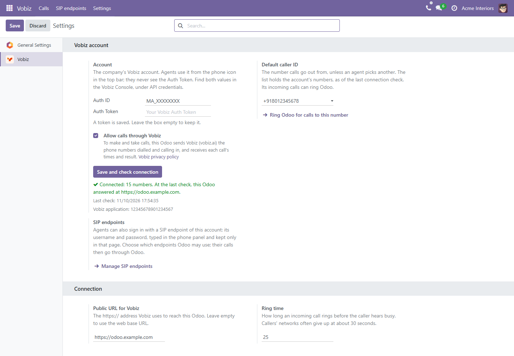

Type a number, pick which of your Vobiz numbers to call from, and click Call. The call keeps going while you move between Odoo screens.
Click any phone number on a contact, and the phone dials it.
A call to your Vobiz number rings every agent who is signed in, with the caller's name when the number belongs to a contact. Accept or Decline: the first agent to accept takes the call.
Direction, outcome (answered, missed, declined, not answered), agent and talk time, under Vobiz > Calls and as a note on the contact.
With an access token (JWT), on the company's Vobiz account or an agent's own, or as one of the company's SIP endpoints, with its username and password.
The Auth Token is stored encrypted and never reaches an agent's browser, and Odoo only accepts call events that Vobiz has signed.
With an access token, on the company's Vobiz account or an agent's own: the Auth Token stays on the server. Or as one of the company's SIP endpoints: its password stays in the browser.

Pick the number to call from, type a number or use the keypad, or click any phone number in Odoo, and call.

On a call: who you are talking to and for how long, with Mute, Hold, a keypad for phone menus, and Hang up.

Vobiz > Calls lists every call, in and out, with its outcome and talk time.

Each call is also noted on the contact, so the whole team sees it.


Questions or problems: support@vobiz.ai